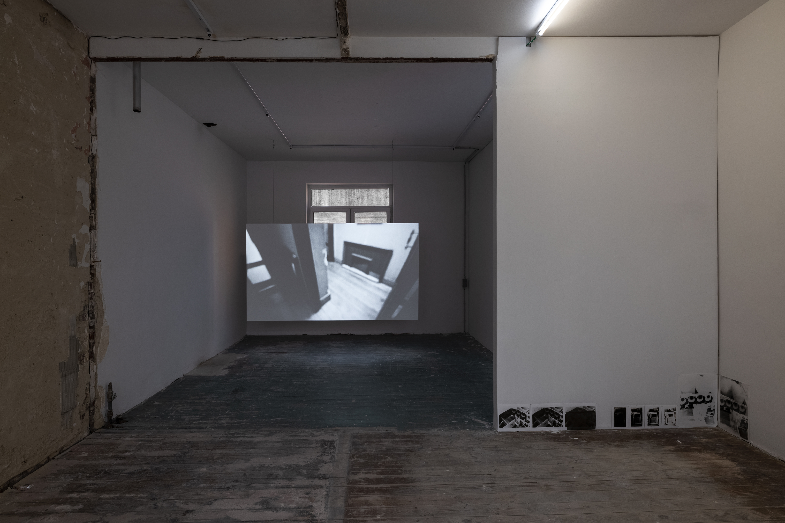
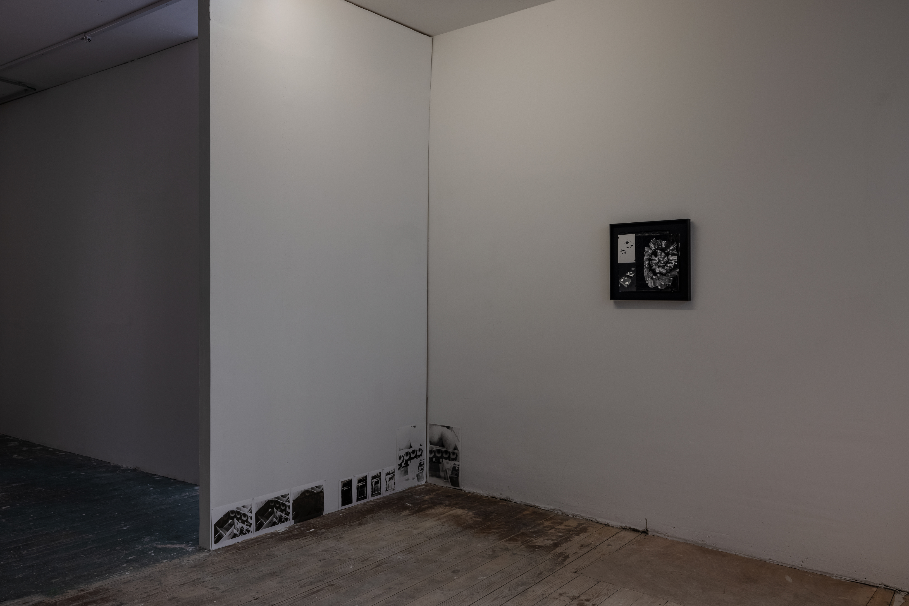
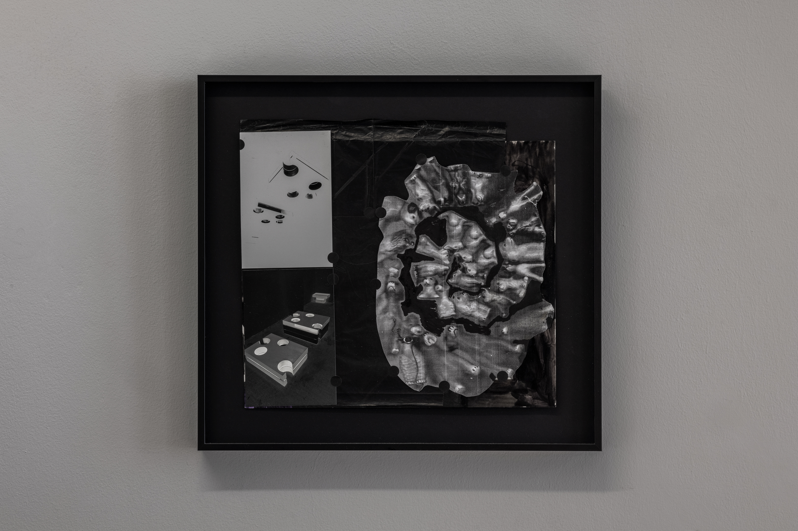
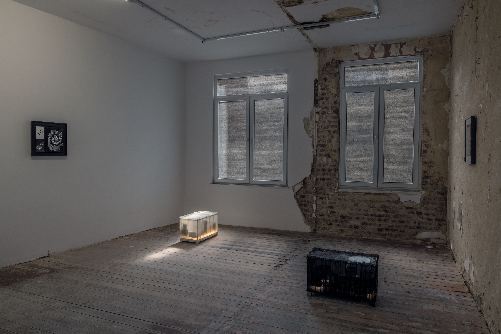
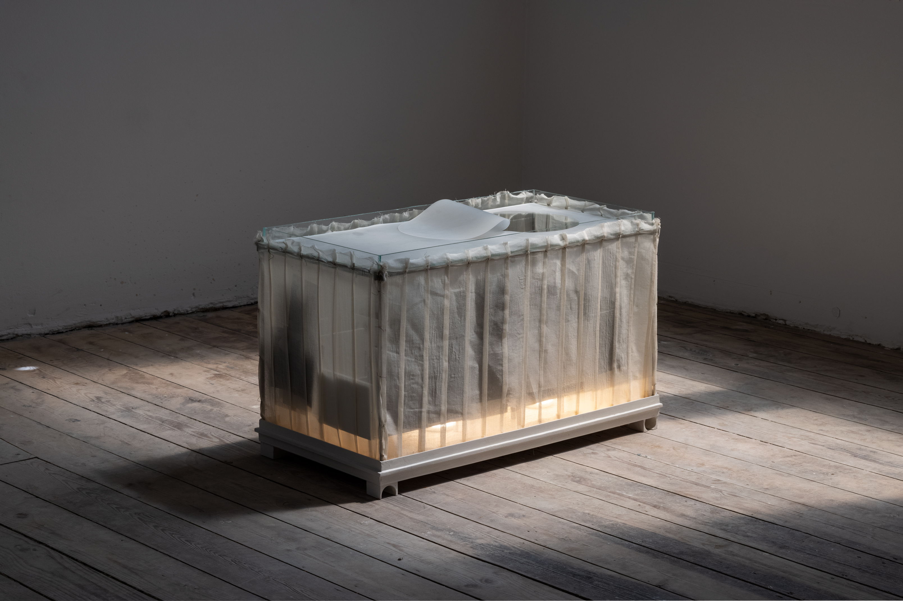
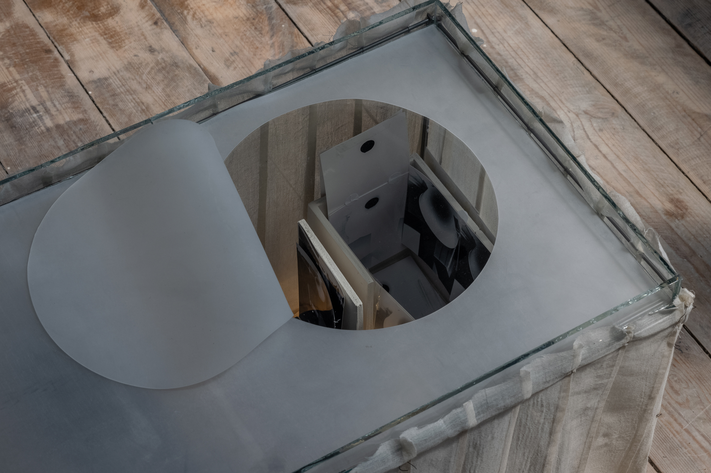
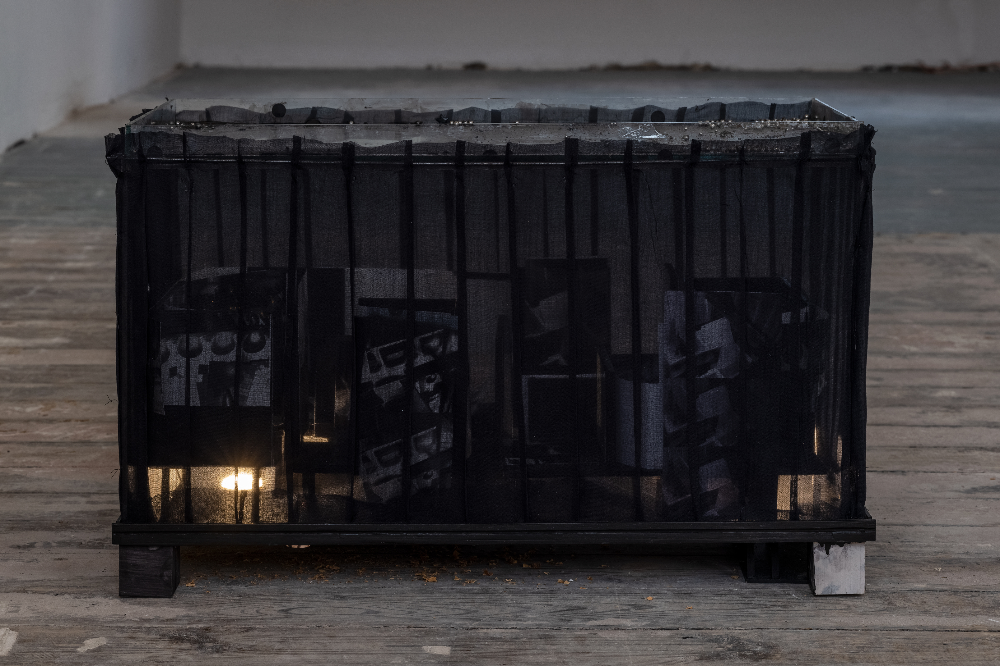
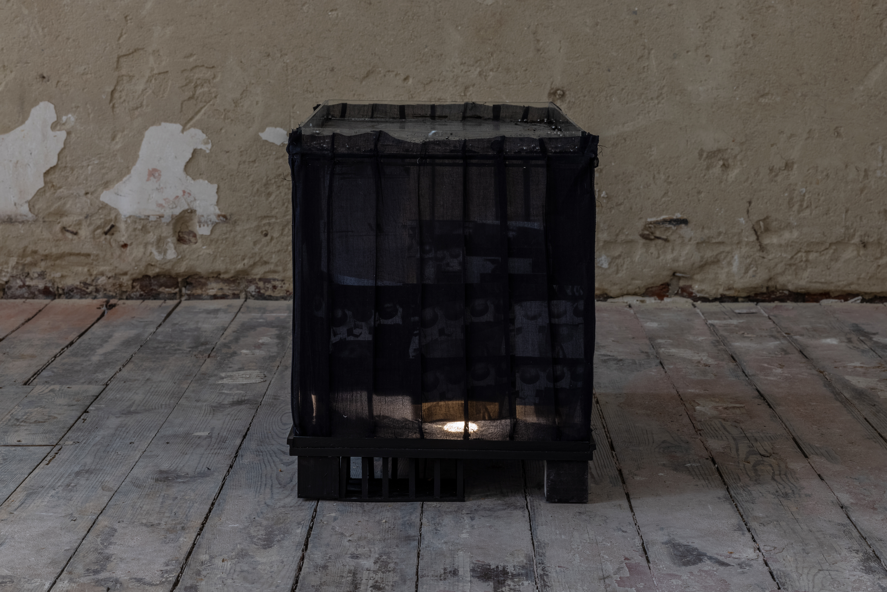
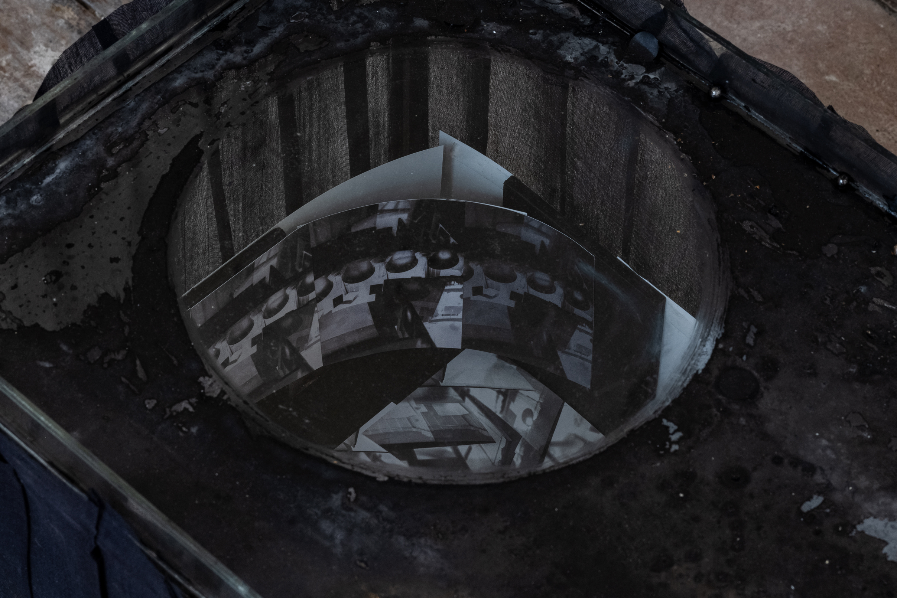
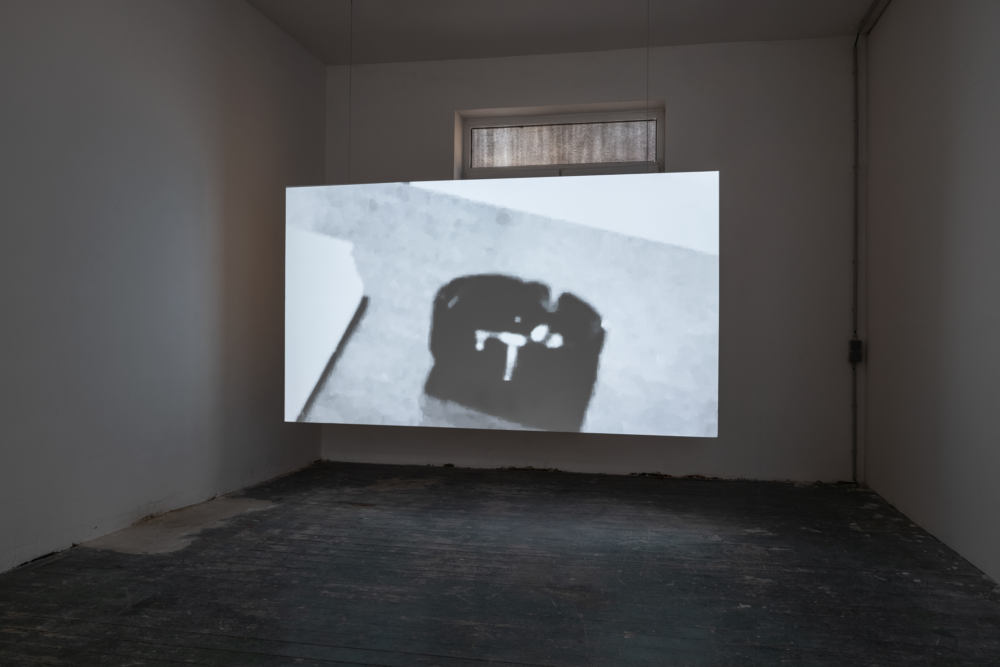

The ancient Greek imagined memory as a large house. According to the theory, to recall a specific idea or object, one needed to visualise entering the room in which it was contained.
Arranging things arranging thoughts arranging lives
All I‘m drawing on, a few sense-memories: large red hands my stuck uselessness stairs
Don’t look back
Don’t look back or else you will be consumed
It’s an exact replica - it’s not
I look at these photos, try to guess their secret histories.
It’s true that a photograph is a witness, but a witness of something that is no more.
My mother my mirror
Echo: the girl with no door to her mouth (Anne Carson)
Memorialising as a craft project.
(I cannot enter it. Yet when I’m inside, I cannot leave it.)
I think about the need to document, to pay witness, to record. The hoarding of facts, like some sort of proof.
If writing is a way of collecting, even hoarding memories – what does it mean then, to also wish to disown?
Excerpts from „Book of Mutter“ by Kate Zambreno.
Stills/Rooms brings together two artists for whom memory is both source of production and subject. Memory operates as an active yet fragmented process, as an ongoing cognitive rearrangement of the present, shaped by embodied experiences of the past. Rather than passive storage, it is understood as something continuously made and remade, formed by selection, framing, and reassembly.
Within her practice, Maria Martini has developed a distinct system in which material often referring to specific furniture from her upbringing is continually brought into new relations with one another. Here, architectural miniatures are placed in relation to their surrounding space and transferred into another object: a distorted copy of themselves, condensing time and serving as a container for fragmented information.
Margarita Maximova's essayistic explorations draw on archival material, often departing from personal experiences or memories. Her video moves through fragments of (in/ex)teriors, a collection of photographs, flowers, and a glitching opera score, assembling them into an atmospheric inquiry into how memory is constrcuted - or when it feels borrowed.











